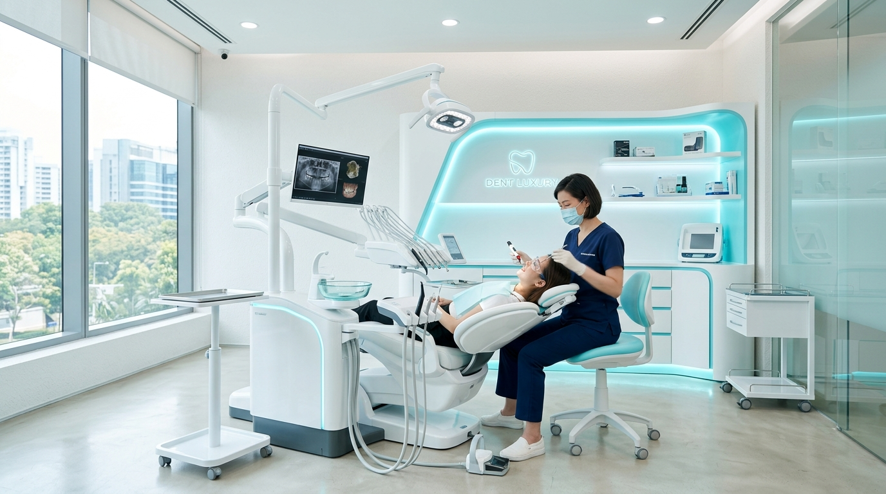
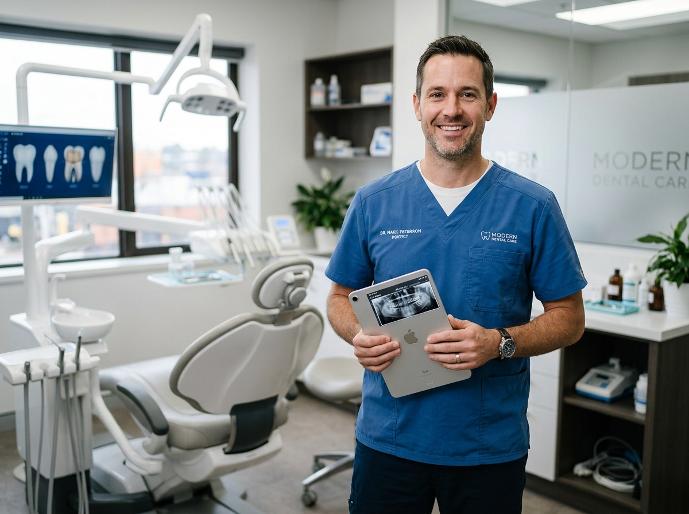

Odontologia de alta precisão combinando tecnologia digital 3D e sensibilidade artística para transformar sua autoestima com total conforto.

Anestesia computadorizada & scanner 3D

Especialista em Dentística Estética e Reabilitação Oral
Com mais de uma década dedicada à odontologia de excelência no coração de São Paulo, meu compromisso é proporcionar tratamentos estéticos que respeitem a anatomia natural e a personalidade de cada paciente.
Lâminas cerâmicas ultra-finas confeccionadas sob medida para harmonizar cor, alinhamento e proporção dos dentes.
Consultar ValoresReabilitação oral segura e definitiva com cirurgia guiada por computador, garantindo precisão e recuperação rápida.
Consultar ValoresProtocolo combinado para resultados rápidos, duradouros e sem a incômoda sensibilidade dentária.
Consultar ValoresAlinhamento ortodôntico discreto e sem fios metálicos. Placas removíveis e confortáveis para o seu dia a dia.
Consultar ValoresTransformação estética rápida e conservadora em sessão única, sem desgastes da estrutura dental original.
Consultar ValoresRemoção de tártaro por ultrassom, polimento coronário e profilaxia completa para manter suas gengivas saudáveis.
Consultar ValoresAmbiente silencioso, privativo e equipado com o que há de mais moderno na odontologia.
Equipado com scanner intraoral e telas HD
Resultados naturais e harmônicos
Consulta com foco nas suas expectativas
"Sempre tive receio de desgastar os dentes para colocar lentes. O Dr. Lucas fez um estudo digital minucioso e o resultado ficou super natural. Atendimento impecável do início ao fim."
"Estrutura fantástica na Faria Lima. Fiz meu implante e fiquei impressionado como a cirurgia foi tranquila e indolor. Recomendo para toda minha família."
"O clareamento ficou maravilhoso e não senti nada de sensibilidade! A clínica é extremamente limpa, agradável e pontual nos horários agendados."
Estamos localizados no coração financeiro de São Paulo, com fácil acesso e serviço de valet no prédio.
Av. Brigadeiro Faria Lima, 2000 - Conjunto 1402
Itaim Bibi, São Paulo - SP, 01451-000
Segunda a Sexta: 08:00h às 19:00h
Sábados (Mediante agendamento): 08:00h às 13:00h